html , css 速查手册
- refer
- 《CSS: The Missing Manual, 4th Edition》
- 《CSS设计指南（第3版）》, Charles Wyke-Simth
CSS 基础
Style 语法
1 | p { color: red; font-size: 1.5em; } |
css 引入方式
- 外部
1
<link rel="stylesheet" href="css/style.css" />
- 内部
1 2 3 4 5 6
<style> h1 { color: #FF7643; font-family: Arial; } </style>
Selector
type selector
selector 本身是 tag 名称。
1 2 3 4 | h2 { font-family: "Century Gothic", "Gill Sans", sans-serif; color: #000000; } |
class selector
.类名 类选择符前面是点(.),紧跟着类名,两者之间没有空格。
1 2 3 4 | .special { color:#FF0000; font-family:"Monotype Corsiva"; } |
1 | <p class="special"> |
限定到tag上的 class selector
1 2 3 4 | p.special { color:#FF0000; font-family:"Monotype Corsiva"; } |
One Tag, Multiple Classes 多类选择符
HTML 的 class 属性可以有多个空格分隔的值。
1 2 3 | <button class="btn add">Add</button> <button class="btn delete">Delete</button> <button class="btn edit">Edit</button> |
In the HTML tag, just add the class attribute, and, for the value, add
each class name, separated by a space. The browser will combine the properties
from the various classes and apply the final, combined set of styles to the element
选择同时存在这两个类名的元素，两个类名之间没有空格,选择同时具有这两个类名的那个元素。
1 | .specialtext.featured {font-size:120%;} |
ID Selectors
ID 选择符
1 | <p id="specialtext">This is the special text.</p> |
1 2 3 | #specialtext {CSS 样式声明} 或 p#specialtext {CSS 样式声明} |
同样的样式，同时赋予不同的selector
1 2 3 | h1, h2, h3, h4, h5, h6 { color: #F1CD33; } h1, p, .copyright, #banner { color: #F1CD33; } |
上下文选择符 Descendant Combinator Selectors
1 2 3 4 5 6 7 | /* any <strong> tag inside an h1 is red */ h1 strong { color: red; } /* Apply this style to every link (a) that’s a descendant of another tag that has the intro class applied to it. */ .intro a { color: yellow; } |
特殊上下文选择符
1 2 3 4 5 6 | <section> <h2>An H2 Heading</h2> <p>This is paragraph 1</p> <p>Paragraph 2 has <a href="#">a link</a> in it.</p> <a href="#">Link</a> </section> |
子选择符 >
标签 1 > 标签 2
标签 2 必须是标签 1 的子元素,或者反过来说,标签 1 必须是标签 2 的父元素。
1 | section > h2 {font-style:italic;} |
紧邻同胞选择符+
标签 1 + 标签 2
标签 2 必须紧跟在其同胞标签 1 的后面。
1 | h2 + p {font-variant:small-caps;} |
一般同胞选择符 ~
标签 1 ~ 标签 2
标签 2 必须跟(不一定紧跟)在其同胞标签 1 后面。
1 | h2 ~ a {color:red;} |
通用选择符* The Universal Selector (Asterisk)
通用选择符*(常被称为星号选择符)是一个通配符,它匹配任何元素.
1 2 3 4 5 6 7 8 9 | /* 会导致所有元素(的文本和边框)都变成绿色。*/ * {color:green;} /* 这样只会把 p 包含的所有元素的文本变成红色。*/ p * {color:red;} /* 任何是 section 孙子元素,而非子元素的 a 标签都会被选中。 至于 a的父元素是什么,没有关系。*/ section * a {font-size:1.3em;} |
可用于清除样式：
1 2 3 4 | * { padding: 0; margin: 0; } |
属性选择符
更多 http://www.stylinwith-css.com
属性名选择符
标签名[属性名] 选择任何带有属性名的标签名。
1 2 3 | /*会导致像下面这个带有 title 属性的 HTML img 元素显示 2 像素宽的蓝色边框, 至于 title 属性有什么值,无关紧要,只要有这个属性在就行啦。*/ img[title] {border:2px solid blue;} |
1 | <img src="images/yellow_flower.jpg" title="yellow flower" alt="yellow flower" /> |
属性值选择符
标签名[属性名="属性值"]
在 HTML5 中,属性值的引号可加可不加,在此为了清楚起见,我们加了。
选择任何带有值为属性值的属性名的标签名。
1 2 | /*在图片的 title 属性值为 red flower 的情况下,才会为图片添加边框。*/ img[title="red flower"] {border:4px solid green;} |
1 | <img src="images/red_flower.jpg" title="red flower" alt="red flower" /> |
Pseudo-Classes（伪类）
UI伪类
Links的特殊状态样式
- a:link
- 链接的一般状态，未访问、鼠标也没悬停。
- a:visited
- 根据浏览器的历史记录，已经访问过的链接
- a:hover
- 鼠标悬停在链接上的时候，设置样式，可以提高下互动效果。
- 这个虚拟selector
:hover，可以用在其他页面元素上，例如，p:hover，.highlight:hover。
- a:active
- 点击链接，按下鼠标，还没松开
:focus
e:focus 在这个以及后续的例子中,e 表示任何元素,如 p、h1、section,等等。
元素被点击，就会获得焦点。
1 2 | /* 输入框获得焦点时，赋予的样式 */ input:focus {border:1px solid blue;} |
:target
e:target 如果用户点击一个指向页面中其他元素的链接,则那个元素就是目标(target),可以用 :target 伪类选中它。
1 2 3 4 5 6 7 | <a href="#more_info">More Information</a> <h2 id="more_info">This is the information you are looking for.</h2> <!-- 单击链接转向 ID 为 more_info 的元素时,为该元素添加浅灰色背景。 --> <style> #more_info:target {background:#eee;} </style> |
结构化伪类
更多参考： http://www.stylinwithcss.com
:first-child 和:last-child
:first-child 代表一组同胞元素中的第一个元素,而:last-child 则代表最后一个。
比如,把下面的规则
1 | ol.results li:first-child {color:blue;} |
应用给以下标记，文本“My Fast Pony”就会变成蓝色。
1 2 3 4 5 | <ol class="results"> <li>My Fast Pony</li> <li>Steady Trotter</li> <li>Slow Ol' Nag</li> </ol> |
:nth-child
e:nth-child(n) e 表示元素名,n 表示一个数值(也可以使用 odd 或 even)。
:nth-child 伪类最常用于提高表格的可读性,对表格的所有行交替应用不同颜色。
1 2 | /*选择一组列表项中的每个第三项*/ li:nth-child(3) |
Pseudo-Elements 伪元素
顾名思义,伪元素就是你的文档中若有实无的元素。
更多伪元素请参考 http://www.stylinwithcss.com
::first-letter 伪元素
1 2 | /*第一个字放大3倍*/ p::first-letter {font-size:300%;} |
::first-line 伪元素
e::first-line 可以选中文本段落(一般情况下是段落)的第一行。
1 2 | /*把第一行以小型大写字母显示*/
p::first-line {font-variant:small-caps;}
|
::before 和::after 伪元素
- 例子
1
<p class="age">25</p>
1 2
p.age::before {content:"Age: ";} p.age::after {content:" years.";}
显示成：Age: 25 years.
继承
子节点可以继承父节点的某些CSS属性。
CSS 中有很多属性是可以继承的,其中相当一部分都跟文本有关,比如颜色、字体、字号。
由于字体和文本样式是可以继承的,所以在使用相对字体单位(如百分比和 em)时
要格外小心。如果某个标签的字体大小被设置为 80%,而它的一个后代的字体大小
也被设置为 80%,那么该后代中文本最终的字体大小将是 64%(80%的 80%)
。这有时候可能并不是你想要的结果。
层叠
层叠,就是层叠样式表中的层叠,是一种样式在文档层次中逐层叠加的过程,目的是让浏览器面对某个标签特定属性值的多个来源,确定最终使用哪个值。
样式来源
浏览器层叠各个来源样式的顺序:
- 浏览器默认样式表
- 用户样式表
- 作者链接样式表(按照它们链接到页面的先后顺序)
- 作者嵌入样式
- 作者行内样式
层叠规则
- 参考这个链接:
-
层叠规则一
找到应用给每个元素和属性的所有声明。浏览器在加载每个页面时,
都会据此查到每一条 CSS 规则,标识出所有受到影响的 HTML 元素。 -
层叠规则二
按照顺序和权重排序。浏览器依次检查 5 个来源,并设定匹配的属性。
如果匹配的属性在下一个来源也有定义,则更新该属性的值,如此循环,直到检查
完页面中所有标签受影响属性的全部 5 个来源为止。声明也可以有权重。
p {color:green !important; font-size:12pt;}
空格!important 分号(;)用于加重声明的权重。 -
层叠规则三
按特指度排序。除了有点拗口之外, 特指度(specificity) 其实表示一条规则有多明确。1
<p class="largetext">A bit of text</p>
1 2
p {font-size:12px;} p.largetext {font-size:16px;} /*胜出*/
1 2
p {font-size:12px;} .largetext {font-size:16px;} /* 胜出，类名选择符比普通的标签选择符具有更高的特指度。*/
- 层叠规则四
顺序决定权重。如果两条规则都影响某元素的同一个属性,而且它们的特指度也相同,则位置最靠下(或后声明)的规则胜出。
计算特指度
有一个简单的记分规则,即 对每个选择符都要按下面的“ICE”公式计算三个值:
I-C-E
三个字母间的短横线是分隔符,并非减号。针对这个公式的计分办法如下:
- 选择符中有一个 ID,就在 I 的位置上加 1;
- 选择符中有一个类,就在 C 的位置上加 1;
- 选择符中有一个元素(标签)名,就在 E 的位置上加 1;
- 得到一个三位数。
1 2 3 4 5 6 7 8 9 10 11 12 13 14 | 这个例子，每个选择符都比前一个选择符的特指度更高。 P p.largetext p#largetext body p#largetext body p#largetext ul.mylist body p#largetext ul.mylist li 0-0-1 特指度=1 0-1-1 特指度=11 1-0-1 特指度=101 1-0-2 特指度=102 1-1-3 特指度=113 1-1-4 特指度=114 |
CSS 属性值
文本值。
例如, font-weight:bold 声明中的 bold 就一个文本值。
文本值也叫做关键字。
数字值。
数字值后面都有一个单位,例如英寸或点。
在声明 font-size:12px 中, 12是数字值,而 px 是单位(像素)。如果数字值为0,那么就不用带单位了。
数字值用于描述元素的各种长度(在 CSS 里,“长度”的含义比较广,还包括高度、
宽度、粗细,等等)。数字值主要分两类:绝对值和相对值。
绝对值描述的是一个真实的长度，一般用像素px；用于打印的话，最好使用英寸（in）。
相对值，em 和 ex 都是字体大小的单位,但在 CSS 中,它们作为长度单位适用于任何元素。
em ,它表示一种字体中 字母 M 的宽度 ,因此它的具体大小取决于你使用的字体。
而 ex 呢,等于给定字体中 字母 x 的高度(小写字母 x代表一种字体的字母中间部分的高度,不包括字母上、下突出的部分——如 d 和 p 上下都出头儿)。
颜色值。
- 参见：
- http://www.w3.org/TR/css3-color/#html4
- http://en.wikipedia.org/wiki/X11_color_names
- http://colrd.com Colrd 是一个 Pinterest 风格的站点,其中有很多能启发人创造力的图片和
照片,以及相应的调色板。 - http://kuler.com Adobe Kuler 的官方站点提供了数千种色样、调色板创建工具,以及其他
人正在选用的时尚颜色。
颜色值可以用几种不同的格式来写,包括 RGB(Red, Green, Blue,红绿蓝)、HSL(Hue, Saturation, Luminance,色相,饱和度,亮度)和十六进制值(例如color:#336699)。
W3C 定义了 16 个颜色关键字
| aqua(浅绿色) | black(黑色) | blue(蓝色) | fuchsia(紫红色) |
| gray(灰色) | green(绿色) | lime(黄绿色) | maroon(褐红色) |
| navy(深蓝色) | olive(茶青色) | purple(紫色) | red(红色) |
| silver(银色) | teal(青色) | white(白色) | yellow(黄色) |
十六进制颜色(#RRGGBB 或#RGB)
RGB 颜色值(R, G , B)
rgb(r, g, b) ， 比如,rgb(0,255,0)表示纯绿色。
RGB 百分比值(R%, G%, B%)
r%, g%, b%
HSL (色相, 饱和度%, 亮度%)
HSL(0,0%,0%)
Alpha 通道
RGB 和 HSL 都支持 Alpha 通道,用于设置颜色的不透明度。相应的格式分别叫 RGBA 和 HSLA。
CSS 布局
盒子模型
-
没有宽度的盒子
所谓“没有宽度”就是指没有显式地设置元素的 width 属性
- 如果不设置块级元素的 width 属性,那么这个属性的默认值是 auto,结果会让元素的宽度扩展到与父元素同宽。
-
有宽度的盒子
设置块级元素的 width 属性，元素的宽度就__不会__扩展到与父元素同宽。
盒子的 width 属性设定的只是盒子内容区的宽度,而非盒子要占据的水平宽度。
浮动 float 与 清除 clear
float
- CSS 设计 float 属性的主要目的,是为了实现文本绕排图片的效果。
- 然而,这个属性居然也成了创建 多栏布局 最简单的方式。
-
浮动元素脱离了文档流,其父元素也看不到它了,因而也不会包围它。
-
文本绕排图片
为了实现文本绕排图片的浮动效果,必须在标记中先写图片,然后再写环绕它的文本。1 2
<img ...... /> <p>...the paragraph text...</p>
1 2 3 4
/*为简明起见,省略了字体声明*/ p {margin:0; border:1px solid red;} /*外边距防止图片紧挨文本*/ img {float:left; margin:0 4px 4px 0;}
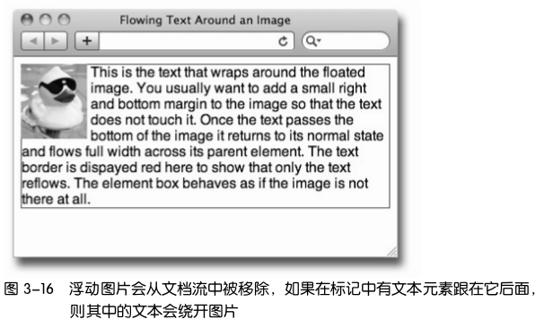
浮动非图片元素时,必须给它设定宽度,否则后果难以预料。图片无所谓,因为它本身有默认的宽度
-
创建分栏
给段落设定宽度,然后也浮动它即可。1 2 3
/*添加 float:left; width:200px;*/ p {float:left; width:200px; margin:0; border:1px solid red;} img {float:left; margin:0 4px 4px 0;}
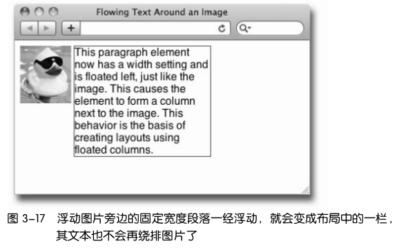
多栏布局
如果你创建了三个浮动、固定宽度的元素,它们就会像这样并排在一行,构成三栏布局的框架。每个元素都可以作为容器,包含其他元素。 -
围住浮动元素的三种方法
1 2 3 4 5 6
<section> <img src="images/rubber_duck2.jpg"> <p>It's fun to float.</p> </section> <footer> Here is the footer element that runs across the bottom of the page.</footer>
1 2 3 4 5 6 7
section {border:1px solid blue; margin:0 0 10px 0;} /*删除默认的上下外边距*/ p {margin: 0;} /*为简明起见,省略了字体声明*/ footer {border:1px solid red;}
-
方法一:为父元素添加
overflow:hiddenoverflow:hidden除了截掉超出显示范围的内容外，还有另一个作用，
即它能可靠地迫使父元素包含其浮动的子元素。1 2 3 4 5 6 7
/* 把 overflow:hidden 声明应用到容器元素后, footer回到页底部，而不是环绕图片 */ section {border:1px solid blue; margin:0 0 10px 0; overflow:hidden;} img {float:left;} p {border:1px solid red;}
-
方法二:同时浮动父元素
促使父元素包围其浮动子元素的方法,是也让父元素浮动起来。
1 2 3 4 5
/* 添加 float:left; width:100%; */ section {border:1px solid blue; float:left; width:100%;} img {float:left;} /*添加 clear:left;*/ footer {border:1px solid red; clear:left;}
-
方法三:添加非浮动的清除元素
清除元素的方式有两种。
-
第一种
1 2 3 4 5 6 7
<section> <img src="images/rubber_duck.jpg"> <p>It's fun to float.</p> <!-- 由于没有默认的样式,不会引入多余空间,div 元素很适合这个目的。 --> <div class="clear_me"></div> </section> <footer> Here is the footer element...</footer>
1
.clear_me {clear:left;}
-
第二种
1 2 3 4 5
<section class="clearfix"> <img src="images/rubber_duck.jpg"> <p>It's fun to float.</p> </section> <footer> Here is the footer element...</footer>
1 2 3 4 5 6 7 8 9 10 11
/* 神奇的 clearfix 规则 */ .clearfix:after { content:"."; display:block; height:0; visibility:hidden; /* 使用 clear:both 意味着 section 中新增的子元素会清除左、右浮动元素 (位于左、右浮动元素下方) */ clear:both; }
-
-
定位 position
position 属性有 4 个值:static、relative、absolute、fixed,默认值为 static。
示例html：
1 2 3 4 | <p>First Paragraph</p> <p>Second Paragraph</p> <p id="specialpara">Third Paragraph (with ID)</p> <p>Fourth Paragraph</p> |
静态定位 position: static
在静态定位的情况下,每个元素在处在常规文档流中。
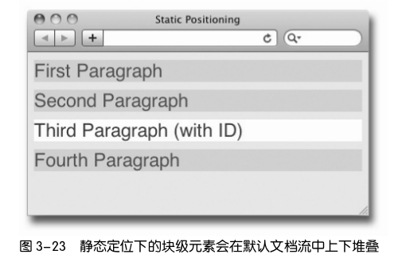
相对定位 position: relative
- 相对的是它原来在文档流中的位置(或者默认位置)
- 接下来,可以使用 top、right、bottom 和 left 属性来改变它的位置
相当于它把自己从原来的包含元素(body)中挣脱出来了，除了这个元素自己相对于原始位置挪动了一下之
外,页面没有发生任何变化。这个元素原来占据的空间没有动,其他元素也没动。
1 | p#specialpara {position:relative; top:25px; left:30px;} |
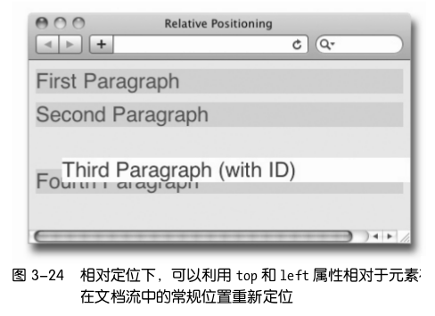
绝对定位 position:absolute
绝对定位会把元素彻底从文档流中拿出来。可以看到元素之前占据的空间被“回收了”。
- 绝对定位元素默认的定位上下文是 body。
- 绝对定位元素的任何祖先元素都可以成为它的定位上下文,只要你把相应祖先元素的 position 设定为 relative 即可。
1 | p#specialpara {position:absolute; top:25px; left:30px;} |
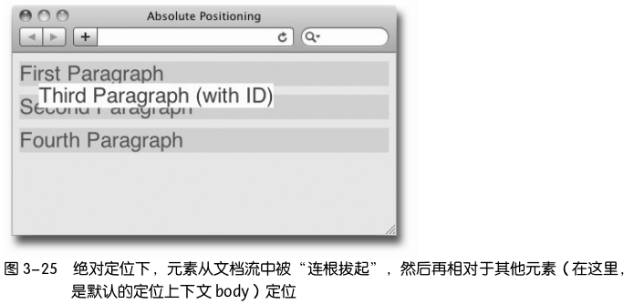
固定定位 position:fixed
完全移出文档流，固定定位元素的定位上下文是视口(浏览器窗口或手持设备的屏幕),因此它不会随页面滚动而移动。
滚动页面才发现哟！
1 | p#specialpara {position:fixed; top:30px; left:20px;} |
定位上下文
把元素的 position 属性设定为 relative、absolute 或 fixed 后,继而可以使用 top、
right、bottom 和 left 属性,相对于另一个元素移动该元素的位置。这里的“另一个元素”,就是该元素的 定位上下文。
1 2 3 4 5 | <body> <div id="outer"> <div id="inner">This is text...</div> </div> </body> |
1 2 | div#outer {width:250px; margin:50px 40px; border-top:3px solid red;} div#inner {top:10px; left:20px; background:#ccc;} |
内外部 div 默认都是静态定位,它们之间不存在谁是谁的定位上下文这个问题。
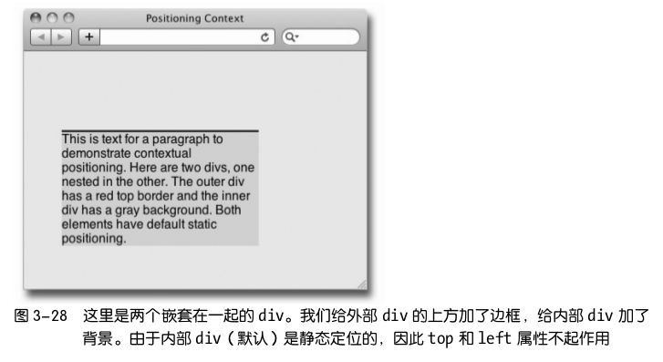
1 2 3 | div#outer {width:250px; margin:50px 40px; border-top:3px solid red;} /* 添加 position:absolute */ div#inner {position:absolute; top:10px; left:20px; background:#ccc;} |
由于没有相对定位的祖先元素供其参照,内部 div 只能以默认的定位上下文 body 作为参照,相对于它定位。
此时,内部 div 完全无视其父元素(外部 div)的存在,top 和 left 属性会相对于 body 元素向下、向左偏移其
位置。
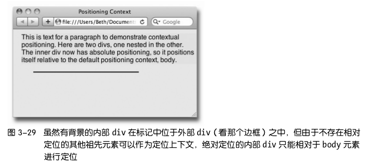
把外部 div 的 position 属性设定为 relative
1 2 | div#outer {position:relative; width:250px; margin:50px 40px; border-top:3px solid red;} div#inner {position:absolute; top:10px; left:20px; background:#ccc;} |
这样,绝对定位的内部 div 的定位上下文就变成了外部 div
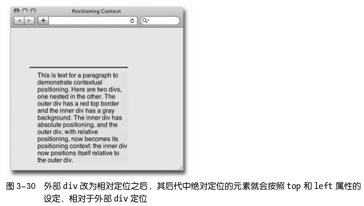
显示属性 display
大多数元素 display 属性的默认值不是 block,就是 inline。
- 块级元素,比如段落、标题、列表等,在浏览器中上下堆叠显示。
- 行内元素,比如 a、span 和 img,在浏览器中左右并排显示,只有前一行没有空间时才会显示到下一行。
display:none
把元素的 display 设定为 none , 该元素及所有包含在其中的元素,都不会在页面中显示。它们原先占据的所有空间也都会被“回收”,就好像相关的标记根本不存在一样。与此相对的是 visibility属性,这个属性最常用的两个相对的值是 visible (默认值)和 hidden 。把元素的visibility 设定为 hidden ,元素会隐藏,但它占据的页面空间仍然“虚位以待”
。
背景
背景支持为元素添加背景颜色和背景图片。
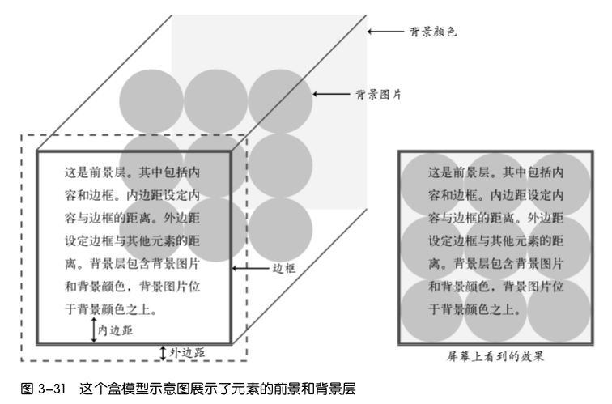
CSS背景属性
- background-color
- background-image
- background-repeat
- background-position
- background-size
- background-attachment
- background(简写属性)
- background-clip、background-origin、background-break(目前尚未得到广泛支持)
背景颜色 background-color
background-color 是背景属性中最简单的,通过它可以设定元素的颜色。
背景图片 background-image
后面例子要用到图片，如下图所示：
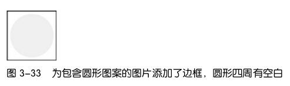
1 2 3 4 | p { ... background-image:url(images/blue_circle.png); } |
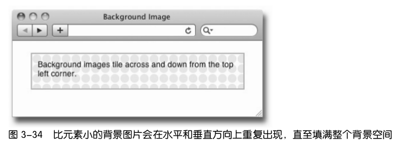
默认情况下背景图片会以元素左上角为起点,沿水平和垂直方向重复出
现,最终填满整个背景区域。
background-image:url(图片路径/图片文件名)
图片地址两边不用加引号,当然加了也没问题。
要改变默认的水平和垂直重复效果,可以修改 background-repeat 属性;要改变背景
图片的起点,可以修改 background-position 属性。
背景重复 background-repeat
- 控制背景重复方式的 background-repeat 属性有 4 个值。默认值就是 repeat
- 只在水平方向重复的 repeat-x
- 只在垂直方向上重复的 repeat-y
- 在任何方向上都不重复(或者说只让背景图片显示一次)的 no-repeat
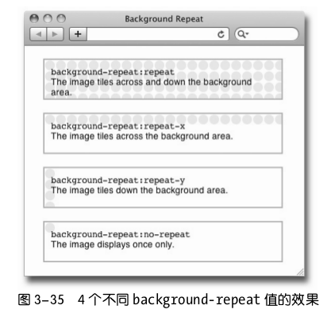
CSS3 还规定另外两个值(但尚未得到浏览器支持)
- background-repeat:round:为确保图片不被剪切,通过调整图片大小来适应背景区域。
- background-repeat:space,为确保图片不被剪切,通过在图片间添加空白来适应背景区域。
背景位置 background-position
background-position 属性有 5 个关键字值,分别是 top、left、bottom、right 和 center,
这些关键字中的任意两个组合起来都可以作为该属性的值。比如,top right 表示把
图片放在元素的右上角位置,center center 把图片放在元素的中心位置。
background-position 属性同时设定元素和图片的原点。原点决定了元
素和图片中某一点的水平和垂直坐标。默认情况下,background-position 的原点位
于左上角。换句话说,元素的左上角和图片的左上角是对齐的,随后图片向各个方
向重复,都是以左上角为起点。
- 设定背景位置时可以使用三种值:关键字、百分比、绝对或相对单位的数值。
- 可以使用两个值分别设定水平和垂直位置。
- 关键字指的顺序不重要,left bottom 和 bottom left 意思相同
- 使用数值(比如 40% 30%)时,第一个值表示水平位置,第二个值表示垂直位置。要是只设定一个值,则将其用来设定水平位置,而垂直位置会被设为 center。
1 2 | /*center center 的简化写法*/ p#center {background-position:center;} |
只给 background-position 设定一个关键字值,则另一个也会取相同的值(比如这里
就相当于写了 background-position:center cetner).
比较修改前后的结果会发现,第二段中的背景图片是以段落的中心点为起点,然后
再向水平和垂直方向重复。

用百分比来设定位置
1 2 3 4 5 6 7 8 9 | div { height:150px; width:250px; border:2px solid #aaa; margin:20px auto; background-image:url(images/turq_spiral_150.png); background-repeat:no-repeat; background-position:50% 50%; } |
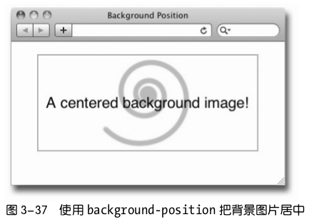
背景尺寸 background-size
background-size 是 CSS3 规定的属性,但却得到了浏览器很好的支持。
这个属性用来控制背景图片的尺寸,可以给它设定的值及含义如下。
- 50%:缩放图片,使其填充背景区的一半。
- 100px 50px:把图片调整到 100 像素宽,50 像素高。
- cover:拉大图片,使其完全填满背景区;保持宽高比。
- contain:缩放图片,使其恰好适合背景区;保持宽高比。
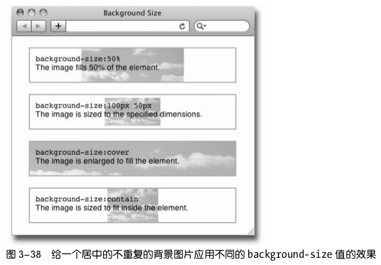
背景粘附 background-attachment
background-attachment 属性控制滚动元素内的背景图片是否随元素滚动而移动。这
个属性的默认值是 scroll,即背景图片随元素移动。如果把它的值改为 fixed,那么
背景图片不会随元素滚动而移动。
background-attachment:fixed 最常用于给 body 元素中心位置添加淡色水印,让水印
不随页面滚动而移动。
background-clip （CSS3 新，要检查浏览器兼容）
控制背景绘制区域的范围,比如可以让背景颜色和背景图片只
出现在内容区,而不出现在内边距区域。默认情况下,背景绘制区域是扩展到边
框外边界的。
background-origin （CSS3 新，要检查浏览器兼容）
控制背景定位区域的原点,可以设定为元素盒子左上角以外
的位置。比如,可以设定以内容区左上角作为原点。
background-break（CSS3 新，要检查浏览器兼容）
控制分离元素(比如跨越多行的行内盒子)的显示效果。
多背景图片
先列出的图片显示在上方,或者说,更接近前景。
1 2 3 4 5 6 7 | p { ... ... background: url(images/turq_spiral.png) 30px -10px no-repeat, url(images/pink_spiral.png) 145px 0px no-repeat, url(images/gray_spiral.png) 140px -30px no-repeat, #ffbd75; } |
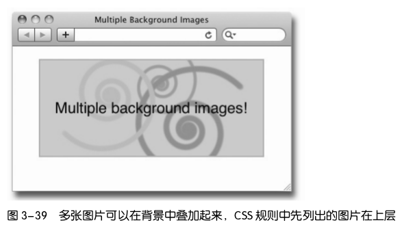
背景渐变
渐变是 CSS 帮我们生成的背景图片。添加渐变可以使用 background-image 属性,也
可以像后面例子中一样使用简写 background 属性。
渐变分两种,一种线性渐变,一种放射性渐变。线性渐变从元素的一端延伸到另一
端,放射性渐变则从元素内一点向四周发散。
线性渐变
1 2 3 | <div class='gradient1'></div> <div class='gradient2'></div> <div class='gradient3'></div> |
1 2 3 4 5 6 7 8 9 10 11 12 13 14 15 16 17 18 19 | div { height:150px; width:200px; border:1px solid #ccc; float:left; margin:16px; } /*例 1:默认为从上到下*/ .gradient1 { background:linear-gradient(#e86a43, #fff); } /*例 2:从左到右*/ .gradient2 { background:linear-gradient(left, #64d1dd, #fff); } /*例 3:左上到右下*/ .gradient3 { background:linear-gradient(-45deg, #e86a43, #fff); } |
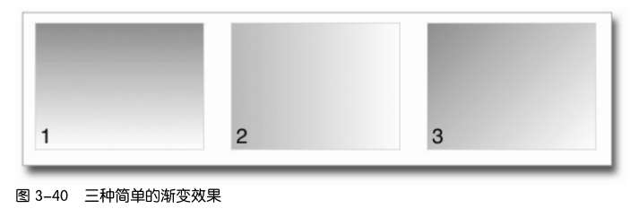
渐变点
渐变点就是渐变方向上的点,可以在这些点上设定颜色和不透明度。
通过设定下一个渐变点的颜色值,就可以控制渐变的效果。可以添加任意多个渐变点。
渐变点的位置一般使用整个渐变宽度的百分比来表示。
如果不是使用百分比或其他值声明渐变点的位置,则三种颜色会均匀分布于整个渐
变,其实际位置是 0%、50%和 100%。
1 2 3 4 5 6 7 8 9 10 11 12 13 14 15 16 | /*例 1:50%处有一个渐变点*/ .gradient1 { background:linear-gradient(#64d1dd, #fff 50%, #64d1dd); } /*例 2:20%和 80%处有两个渐变点*/ .gradient2 { background:linear-gradient(#e86a43 20%, #fff 50%, #e86a43 80%); } /*例 3:25%、50%、75%处有三个渐变点*/ .gradient3 { background:linear-gradient(#64d1dd, #fff 25%, #64d1dd 50%, #fff 75%, #64d1dd); } /*例 4:为同一个渐变点设定两种颜色可以得到突变效果*/ .gradient4 { background:linear-gradient(#e86a43, #fff 25%, #64d1dd 25%, #64d1dd 75%, #fff 75%, #e86a43); } |
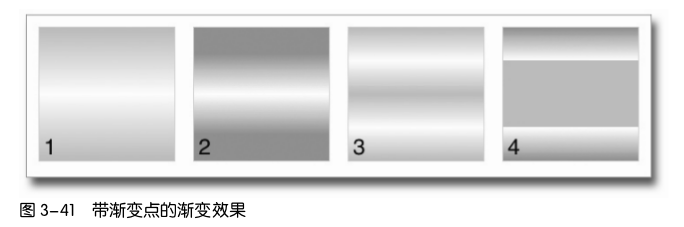
放射性渐变
1 2 3 4 5 6 7 8 9 10 | /* 这里虽然只声明了-webkit-前缀,但带有其他厂商前缀的属性也是必要的。*/ .gradient1 { background: -webkit-radial-gradient(#fff, #64d1dd, #70aa25); } .gradient2 { background: -webkit-radial-gradient(circle, #fff, #64d1dd, #e86a43); } .gradient3 { background: -webkit-radial-gradient(50px 30px, circle, #fff, #64d1dd,#4947ba); } |
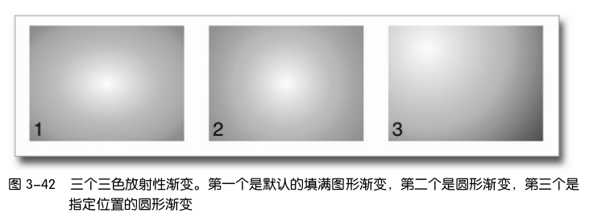
字体和文本
字体
字体来源
- 用户机器中安装的字体。
- 保存在第三方网站上的字体。最常见的是 Typekit 和 Google,可以使用 link 标签
把它们链接到你的页面上。 - 保存在你的 Web 服务器上的字体。这些字体可以使用
@font-face规则随网页一起
发送给浏览器。
兼容性
老浏览器（<=ie8）支持html5的tag
html5 引入了很多新的tag，例如，<section>, <article>, <nav> 等。
在低于IE9的浏览器，不认识这些tag。
解决方法是，在 <head> 中添加：
1 2 3 | <!--[if lt IE 9]>
<script src="//html5shiv.googlecode.com/svn/trunk/html5.js"></script>
<![endif]-->
|
浏览器市场份额
doctype
html 5
1 | <!doctype html>
|
HTML 4.01 Transitional
1 2 | <!DOCTYPE HTML PUBLIC "-//W3C//DTD HTML 4.01 Transitional//EN"
"http://www.w3.org/TR/html4/loose.dtd">
|
XHTML 1.0 Transitional
1 2 3 | <!DOCTYPE html PUBLIC "-//W3C//DTD XHTML 1.0 Transitional//EN" "http://www.w3.org/TR/xhtml1/DTD/xhtml1-transitional.dtd"> <html xmlns="http://www.w3.org/1999/xhtml"> |
Modernizr 用于检测用户浏览器兼容性 JS库
Modernizr 是一个 JavaScript 库,用于检测用户浏览器支持哪些 HTML5 和 CSS3 功能。
更多信息,请参考这个网址: http://modernizr.com。
厂商前缀 VPS
为鼓励浏览器厂商尽早采用 W3C 的 CSS3 推荐标准,于是就产生了
VSP Vendor Specific Prefixes,(厂商前缀)的概念。
有了这些 CSS 属性的前缀,厂商就可以尝试实现 W3C 涵盖新 CSS 属性的工作草案。在迅速实
现新属性的同时,还可以声明它们是过渡的、部分实现的,或者实验性的。总之,后果由使用
者自负。
就拿 W3C 推荐的 transform 属性为例,标准语法是这样的:
1 | transform: skewX(-45deg); |
然而,由于这个属性还没有完全定案,为保证在大多数浏览器以及它们的实验性实现中能够使
用这个属性,应该针对想要支持的浏览器为该属性添加 VSP。每个浏览器只使用各自能理解的
属性声明。
1 2 3 4 5 | -moz-transform:skewX(-45deg); /* Firefox */ -webkit-transform:skewX(-45deg); /* Chrome 及 Safari */ -ms-transform:skewX(-45deg); /* 微软 Internet Explorer */ -o-transform:skewX(-45deg); /* Opera */ transform:skewX(-45deg); /* 最后是 W3C 标准属性 */ |
VSP 的开头是一个连字符,然后是前缀名,接着又是一个连字符,最后是 W3C 属性名。另外
要特别注意,在带前缀的属性声明之后还要声明 W3C 标准属性,以备将来有浏览器实现完整
的不带前缀的属性时派上用场。
这里的 Safari 和 Chrome 都使用相同的 -webkit- 前缀,
是因为
它们都使用 Webkit 渲染引擎。
以下 CSS3 属性必须加 VPS:
| border-image | translate |
| linear-gradient | transition |
| radial-gradient | background* |
| transform | background-image* |
| transform-origin |
* 针对背景图片或渐变
有关 CSS3 和 VPS 的最新信息,可以参考这个网站: http://caniuse.com。
如果想实现自动添加 VPS,可以使用-prefix-free 腻子脚本(polyfill)